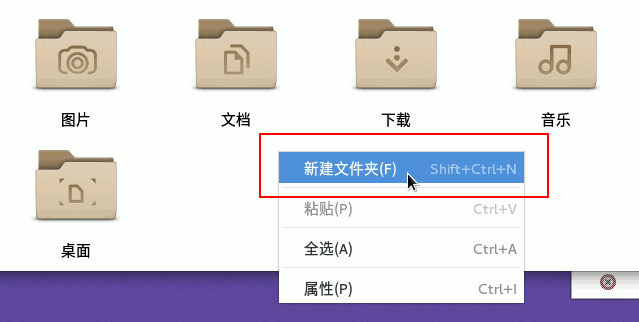
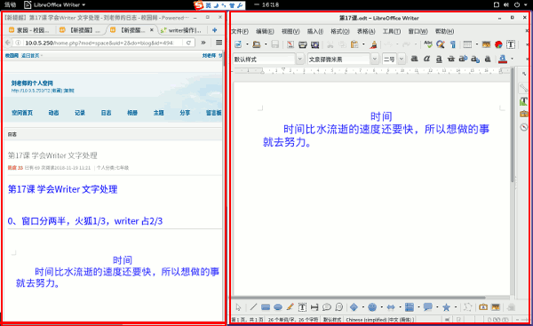
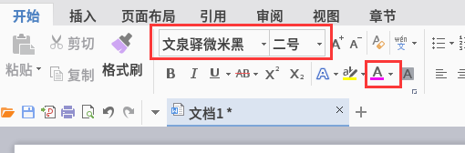
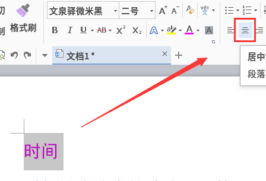
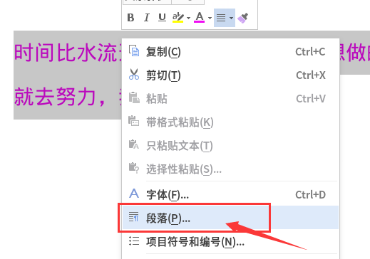
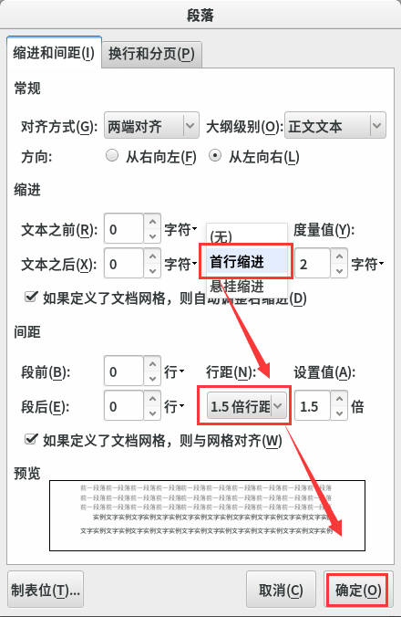

第1课 学会 wps 文字窗口
1、打开主文件夹，看看里面有没有7-2文件夹，没有就建一个；

2、点活动、wps，打开蓝色的文字处理；
提示新版本升级，点下面的“忽略此版本”；
3、首次激活，去掉左边的“加入计划”，右边点“接受”；
4、进入窗口后，点叉（×）按钮，关闭不用的标签；
5、点上边的加号“+”按钮，或者点中间“新建”图标，新建一个空白文档；
6、把窗口排好，左边范例1/3，对着屏幕上面时间，
不要超过输入条；

5、出来的窗口，记住下面这些常用的组成部分：
标题栏、菜单栏、开始面板、格式栏；
6、在格式栏里，从左到右，依次选择“思源黑体”、二号、彩色；

7、输入下面的文字，输入标题“时间”后，按一下回车键换行， “我会”里面自己写一句；
*8、选中第一行“时间”，选中的会变蓝，在格式栏里点居中按钮；

*9、再选中第一段，瞄准点右键，“段落”，也可以在面板上找一个小箭头；

*10、在对话框中间“特殊格式”里找到“首行缩进”，
在下边的行距，选择1.5倍行距，点“确定”；

11、在开始面板里点“保存”按钮，也可以点菜单“文件 - 保存”命令；
13、上边文件名改成“第01课”，小数点后面不要动，
左边找到主文件夹，找到自己的7-2文件夹，保存，多点几次；
本节学习了的基础知识，如果你成功地完成了练习，请继续学习下一课内容；
返回目录 下一课
本教程由TeliuTe制作|著作权所有
基础教程网：http://teliute.org/
美丽的校园……
转载和引用本站内容，请保留作者和本站链接。